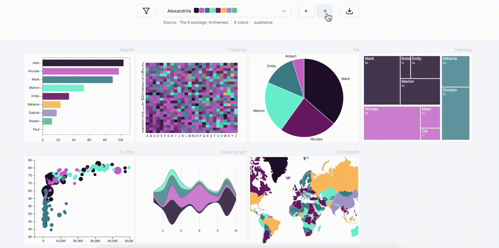

3 Repos, 1 Package: Why?
The Project
During the summer of 2024, Yan Holtz and I created a Python package called PyPalettes. It provides a collection of pre-made palettes for data visualization. In my opinion, this project has been quite successful: thousands of likes on social media, around 250 GitHub stars, and a few articles published by others.
The project comprises approximately 500 lines of Python code in total (excluding documentation) and primarily offers a single function (or none in some use cases!). Yet, we structured the project into three independent repositories. Why did we choose this approach?
Here, I’ll explain our reasoning with the goal of encouraging you to explore our package.
What Are the Three Repos About?
-
The first (and main) repository contains the actual Python code and the palettes (stored as a single CSV file). This is where I make updates, address issues, and so on. See here.
-
The second repository supports the Python Graph Gallery website, which is owned by Yan. This site features hundreds of chart examples made with Python and receives significant traffic. This repository was not originally created for PyPalettes (it predates it), but two of its many pages are dedicated to PyPalettes (one for the doc, one for the Color Palette Finder).
-
The third repository is dedicated to the Color Palette Finder, a tool we built to browse and interact with the palettes. See here
Documentation Isn’t Automatically Generated
Typically, package developers write what’s known as "inline documentation"—documentation embedded within the code itself. This is considered a best practice because it ensures a single source of truth. In Python, we use docstrings; in R, tools like Roxygen2 are common.
For PyPalettes, the official documentation is manually written as a blog post on the Python Graph Gallery. See here. This approach gives us greater control over the look and feel of the documentation and leverages the traffic already present on the site. Given the small size of the project, having two sources of truth isn’t a significant issue.
Note: I still wrote all the docstrings for two main reasons. First, to assist my future self (or any other developer) when revisiting the code. Second, many IDEs display a function’s docstring when you hover over it, making it a quick and convenient way to access its documentation.
The Color Palette Finder
The Color Palette Finder allows users to browse the 2,500+ palettes provided by PyPalettes. Users can try different palettes on various charts and see instant results—or blazingly fast results, if you prefer.
This tool is a fantastic way to work with colors, offering an immediate preview without the need for coding. It lets you focus purely on design.

Building this tool wasn’t easy—Yan did 99% of the work. It’s a React + D3.js + Tailwind web app, meaning the charts you see aren’t matplotlib charts but JavaScript charts designed to resemble matplotlib.
Once Yan had done that, he added a new page on the Python Graph Gallery where he integrates the Color Palette Finder (an iframe) with an explanation of the context and links to the repo and actual documentation.
User Experience
I strongly believe that the Color Palette Finder is what makes PyPalettes special. It’s incredibly easy to use and achieves its purpose quickly.
The way we structured PyPalettes resembles a (very small) product rather than a traditional open-source package. Our main priorities were: how will people discover it? How can we make them understand the package quickly? How do we show its value?
This approach was feasible because the project itself is quite simple. The Python code is concise and straightforward. We believe many excellent open-source tools fail to gain traction due to poor branding, limiting their reach and impact.
Takeaways
Most packages should avoid relying on multiple repositories, especially if they’re small (fewer than 10,000 lines of code, for example).
However, sometimes it’s worth considering alternatives. Could you do something unique? For example, we customized our documentation for PyPalettes. Similarly, you could build a Shiny/Streamlit app or explore other creative avenues.
The fact that it's open source shouldn't mean that only nerds will be able to understand it. Try to make it accessible to everyone without any prior knowledge.
Feedback
Having a different opinion? A nuance to bring? A question to ask? Please share it!
I'm always looking for feedback. The best way to share your thoughts is to open an issue on the GitHub repository of the site.